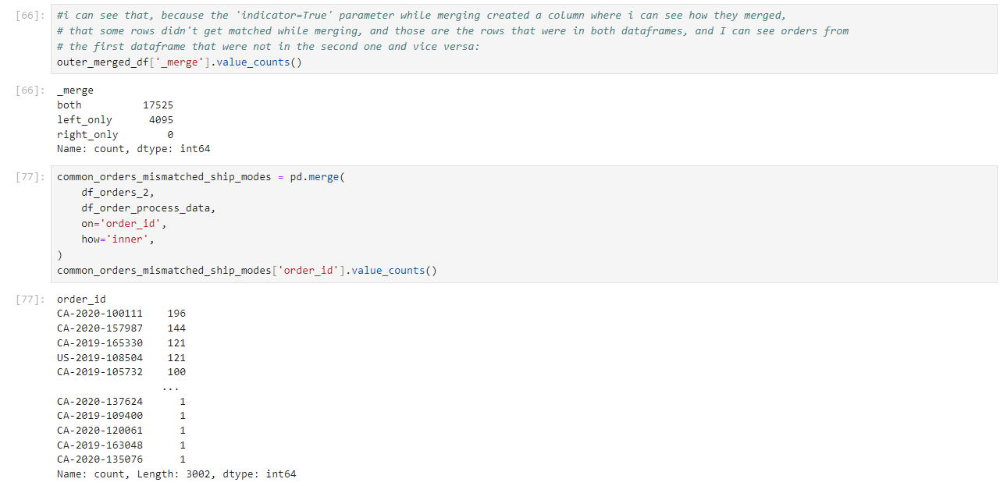
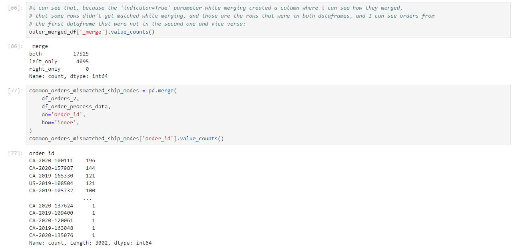

Project Details
The goal of this project was to understand and extract the information from customer briefing, and based on it, to clean, prepare and combine multiple data sources, to than perform exploratory data analysis on. Expanded on the descriptive data analysis, I performed inferential statistics methods: an A/B test to check the Lead Time for each processing type and if there is some significant difference, and created a simple Linear regression model on just one factor which is the shipping mode to predict the Lead Times.
Feel free to check out the
project on GitHub🤓 ➜
 
